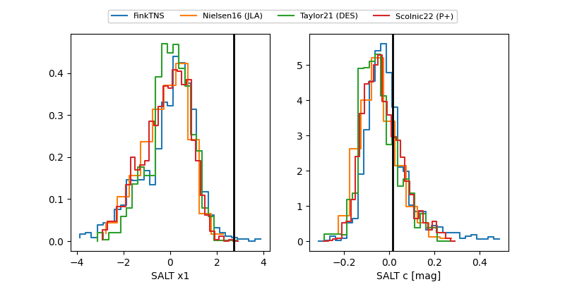

FINK: ZTF25abpfatp
Lasair: ZTF25abpfatp
ALeRCE: ZTF25abpfatp
ZTF25abpfatp (ztf,fink)
equatorial (ra, dec) = (132.6432,+28.44552)
galactic (l, b) = (196.5204,+37.29398)

last ztfr=18.32
44 ztfr detections